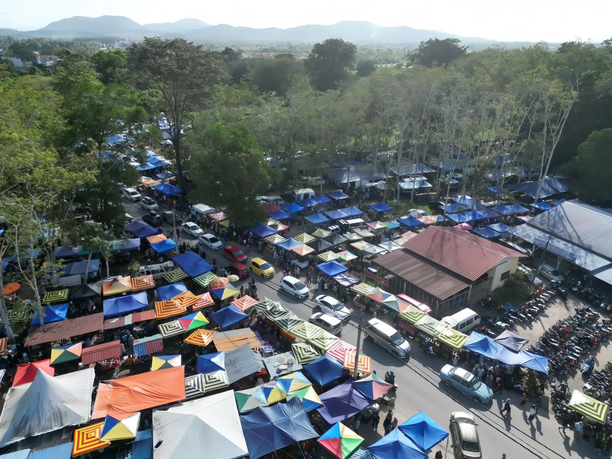
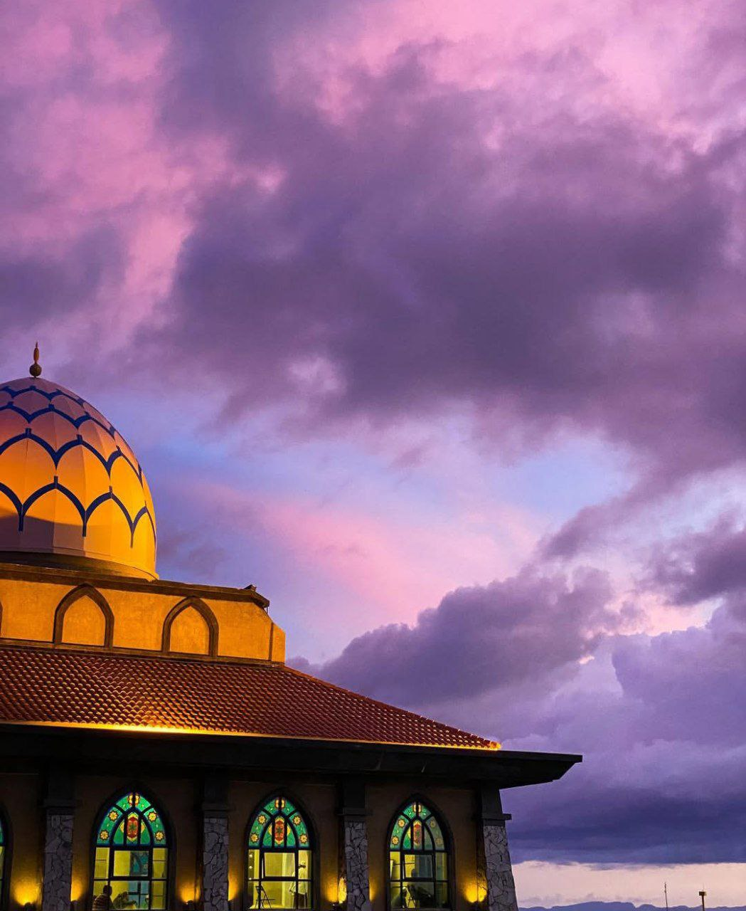
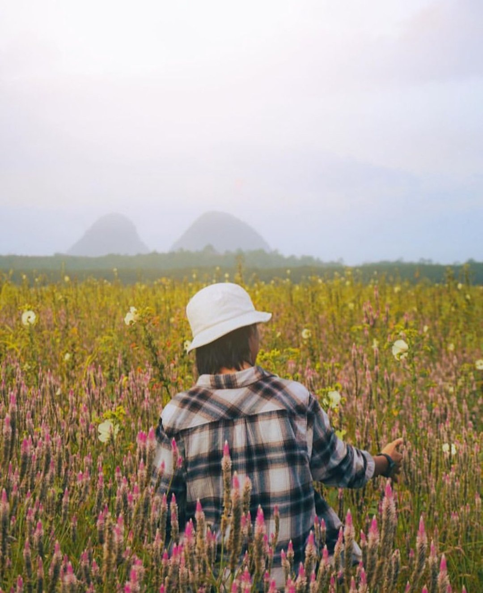

Things To Do
Perlis is not only known for its natural beauty and unique shopping experiences,
but it is also a great destination for photography lovers. Visitors can capture
local culture, daily life, and scenic landscapes while enjoying popular cafes.
Must-Visit Shopping Destinations

❶ PADANG BESAR (STREET AND ARKED NIAGA)
Why popular:
- Border town with Thailand, many people come for cheap goods & souvenirs.
- Features Arked Niaga Padang Besar and many small shops along the main street.
Tip: Bargaining is common, especially at street stalls
❷ KANGAR JAYA MALL
Why popular:
- Modern shopping area in Kangar town center.
- Great for shopping while having food at the food court.
Tip: Ideal for relaxed shopping without bargaining


Tip: Best for casual strolling and photography
❸ NAT POKOK GETAH (ARAU)
Why popular:
- Local weekend market with authentic Perlis vibe.
- Perfect for exploring local culture.
Tip: Best for casual strolling and photography
Highly-Rated Cafes in Perlis You Must Visit


Scenic Views & Photography

Viewpoint Wang Kelian

Sunset Kuala Perlis

Street Art and Design

Tasik Melati

Ladang Kenaf